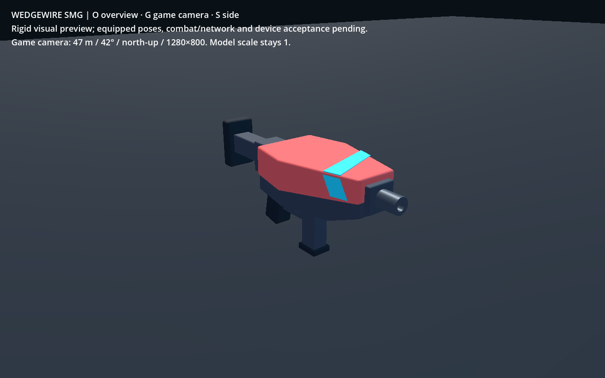
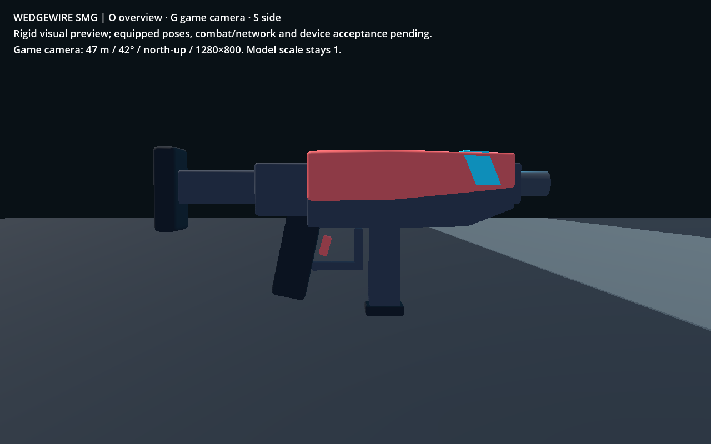
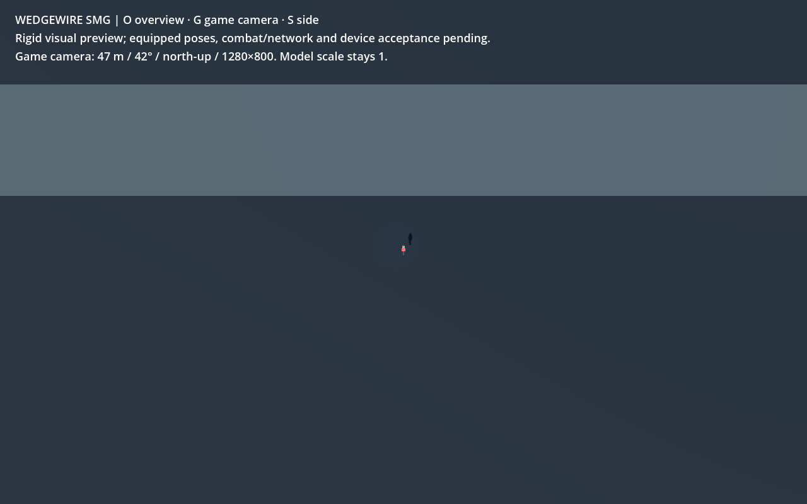

Wedgewire SMG — approved C, in Godot
Original Blender source → explicit GLB → saved linked wrapper and local preview.
Real Forward+ captures at 1280×800. Equipped poses, city readability, combat/network
and device acceptance remain pending.
Asset handoff, sockets and checks ·
Selected concept

Overview: broad coral shell, cyan band, short muzzle and compact stock.

Side: support contact lies beneath the forward shell; stock contact is on the rear pad.

Actual game camera: 47 m, 42° vertical perspective, north-up. Weapon at unit
scale and Y=1.3 m. Roughly 18 px long; no crop or enlarged representation claims
native-size readability. Final held/city context remains to be checked.